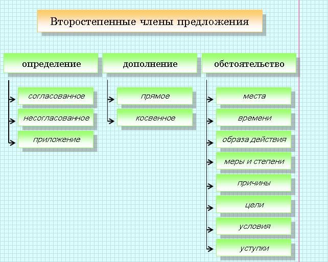
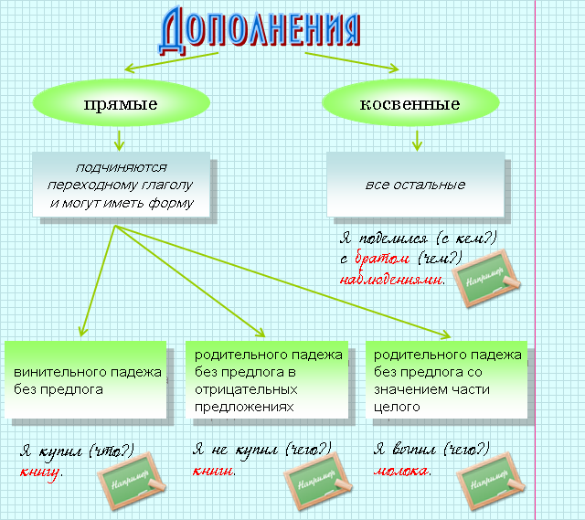

|
Чтобы определить вид второстепенного члена предложения, нужно найти слово, от которого он зависит, и определить, что он обозначает, на какой вопрос отвечает и какой частью речи является. |
|
Дополнением называется второстепенный член предложения, который отвечает на вопросы косвенных падежей и выражается теми же частями речи, что и подлежащее. Дополнения обычно зависят от членов предложения со значением действия (выраженных глаголом, причастием, деепричастием). |
 |
Я читаю (что?) письмо. За партами сидели ученики, читающие (что?) письмо. Читая (что?) письмо, я невольно задумался. |

|
Определение − это второстепенный член предложения, который обозначает признак лица или предмета и отвечает на вопросы какой? чей? который? и т. п. |
|
Чеховские (чьи?) пьесы пользуются неизменной (какой?) популярностью. |
| Согласованные определения согласуются с определяемым словом в роде, числе и падеже.
Согласованные определения могут быть выражены: |
Несогласованное
определение связано с определяемым словом по способу
управления или примыкания.
Несогласованные определения могут быть выражены: |
||
 |
Прилагательным. Например: Наступила ранняя весна. |
|
Существительным
в косвенном падеже с предлогом или без предлога. Например: Я люблю пьесы (чьи?) Чехова. На ней была юбка (какая?) в клетку. |
|
Местоимением. Например: Это моя тетрадь. |
|
Притяжательным
местоимением его, ее, их. Например: Это(чей) его дом. Не видно (чьего?) его дома. |
|
Причастием. Например: На столе лежал неподписанный конверт. |
|
Формой сравнительной
степени прилагательного. Например: Я на твоем месте спросил бы совета у человека (какого?) старше тебя. |
|
Порядковым числительным. Например: Мы учимся в восьмом классе. |
|
Наречием.
Например: Нам подали яйца (какие?) всмятку. |
|
Глаголом
в неопределенной форме. Например: У него было большое желание (какое?) учиться. |
||